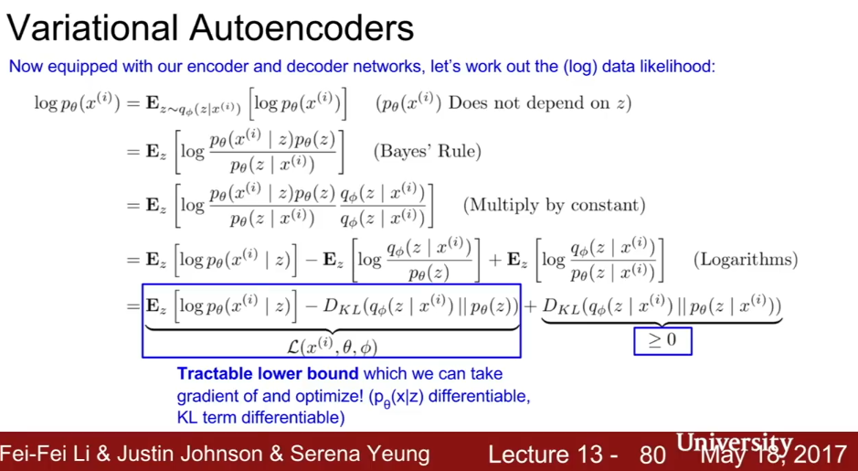
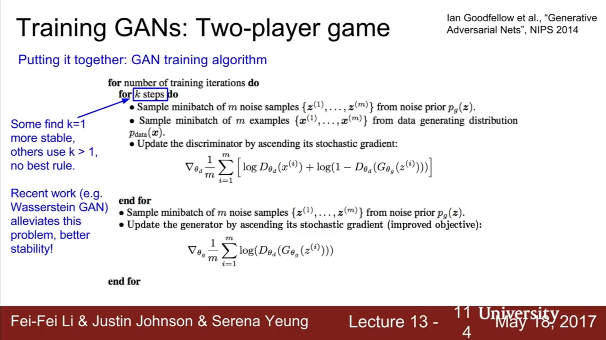

Unsupervised learning allows us to use a lot more data, since unlabelled data is very abundant.


Generative Models
Generative Models do densitiy estimation of our underlying data distribution.
- We can do explicit density estimation (explicitly define and solve for p(x))
- Or we can do implicit density estimation - model that can sample from p(x) without explicitly defining it. (Appendix 1a)
PixelRNN, PixelCNN
(Appendix 1b)
Pros: Decently good quality images
Cons: Quite slow to generate pixel by pixel.
These are an explicit density estimation generative model (called a fully visible belief network).
This model uses the chain rule to decompose likelihood of image x into product of the probabilities of each pixel given the previous pixels.
PixelRNN generates image pixels starting from corner, dependency on previous pixels modeled using an LSTM. (This is slow becauses it uses sequential generation!)
PixelCNN was introduced to speed things up a but. We still generate image pixels starting from the corner, but deprenency on previous pixels now modeled using a CNN over context region. Maximise the likelihood of the training image. (Training time is faster, but test time still must proceed sequentially -> still slow)
Variational Autoencoders
(Intuition in Appendix 1c.1., Details in Appendix 1.c.2)
Pros: Allows inference of q(z|x), where z is e.g. the amount of smile in an image, which can be a useful feature representaiton for other tasks.
Cons: Samples blurrier and lower qulaity compared to state of the art (GANs).
Variational Autoencoders is an approximate density generative model. We optimise an intractible density fucntion using a tractable lower bound as a proxy.
Autoencoders are models (generally CNN for images) that compress the representations of inputs by being trained to compress a representaiton and then regenerate itself. The architecture is a encoder-decoder, the encoder is 4-layer convolutional network, decoder is 4-layer upconvolutional network. If the original image is x, we call the compressed feature representaiton z.
The loss function is L2 loss of the reconstructed image w.r.t. the original image
|| x - hat(x) || ^2
In autoencoders, the compressed feature representaion z we start with is discrete, and we can generate a different image for each z.
In variational autoencoders, we take a distribition over the values of z. For this reason, we do not produce z directly from x in the encoder, but produce the mean and diagonal covariance of z given x.
Then, we don’t produce x directly from z in the decoder, but produce the mean and diagonal covariance of x given z. (See Appendix 1c)
Generative Adversarial Network (GAN)
(Appendix 1.d)
Direct implicit density (no explicit density function) sampling.
Appendix 1a: Intro to Generative Models
Appendix 1b:
PixelRNN, PixelCNN
This model uses the chain rule to decompose likelihood of image x into product of the probabilities of each pixel given the previous pixels.
Appendix 1c.1: Variational Autoencoders (VAE) Intuition
At this point, a natural question that comes in mind is “what is the link between autoencoders and content generation?”. Indeed, once the autoencoder has been trained, we have both an encoder and a decoder but still no real way to produce any new content. At first sight, we could be tempted to think that, if the latent space is regular enough (well “organized” by the encoder during the training process), we could take a point randomly from that latent space and decode it to get a new content. The decoder would then act more or less like the generator of a Generative Adversarial Network.
To illustrate this point, let’s consider the example we gave previously in which we described an encoder and a decoder powerful enough to put any N initial training data onto the real axis (each data point being encoded as a real value) and decode them without any reconstruction loss. In such case, the high degree of freedom of the autoencoder that makes possible to encode and decode with no information loss (despite the low dimensionality of the latent space) leads to a severe overfitting implying that some points of the latent space will give meaningless content once decoded. If this one dimensional example has been voluntarily chosen to be quite extreme, we can notice that the problem of the autoencoders latent space regularity is much more general than that and deserve a special attention.
When thinking about it for a minute, this lack of structure among the encoded data into the latent space is pretty normal. Indeed, nothing in the task the autoencoder is trained for enforce to get such organisation: the autoencoder is solely trained to encode and decode with as few loss as possible, no matter how the latent space is organised.
One possible solution to obtain such regularity is to introduce explicit regularisation during the training process. Thus, as we briefly mentioned in the introduction of this post, a variational autoencoder can be defined as being an autoencoder whose training is regularised to avoid overfitting and ensure that the latent space has good properties that enable generative process. In particular, the latent space representation of the image is forced to be very close to a standard normal distribution.
…
The Reparameterization Sampling trick
The overall architecture is then obtained by concatenating the encoder and the decoder parts. However we still need to be very careful about the way we sample from the distribution returned by the encoder during the training. The sampling process has to be expressed in a way that allows the error to be backpropagated through the network. A simple trick, called reparametrisation trick, is used to make the gradient descent possible despite the random sampling that occurs halfway of the architecture and consists in using the fact that if z is a random variable following a Gaussian distribution with mean g(x) and with covariance h(x) then it can be expressed as
Appendix 1c.2: Variational Autoencoders (VAE) Details
VAEs are approximate density models - which is, we do not optimize the density directly, instead we optimize an approximate density which is a lower bound on the density.
Intro: Autoencoders:
Autoencoders are models that compress the representations of inputs by being trained to compress a representaiton and then regenerate itself. Encoder-decoder architecture, decoder is 4-layer upconvolutional network.
The loss function is L2 loss of the reconstructed image w.r.t. the original image
|| x - hat(x) || ^2
After training, we throw away the decoder. The encoder now can generate the low-dimensionality feature representation of the image. We can use the encoder outputs as the inputs to some supervised model (make sure to do some fine-tuning on the new objective).
Variational Autoencoders:
We assume training data is generated from underlying unobserved representaiton z (where z is latent factors used to generate).
We first sample from a prior (like a gaussian) that determines our expected distribution of the latent factor. Then, given the sampled latent factor, we same from the space image space conditional on z. (z is like how much pose, how much smile).
Sample from p(z) using Gaussian.
Sample from p(x|z) using neural network.
Problem: The integral is intractible (the computation cannot be computed in reasonable time).
Solution. Instead of bothering with p(x) (See below slide) which we use to compute the posterior density p(z|s), what we really care about is the posterior density itself. So instaed we define an additional encoder network q(z|x) that approximates p(z|x) directly.
In autoencoders, the compressed feature representaion z we start with is discrete, and we can generate a different image for each z.
In variational autoencoders, we take a distribition over the values of z. For this reason, we do not produce z directly from x in the encoder, but produce the mean and diagonal covariance of z given x.
Then, we don’t produce x directly from z in the decoder, but produce the mean and diagonal covariance of x given z.

Training VAEs
1. Take a minibatch of input data
2. Pass it through encoder network q(z|x) to get mu_{z|x}, sigma_{z|x}. [One value for each minibatch?] Use q(z|x) to compute the second (KL) term of the loss.
3. Sample z from z|x~N(mu_{z|x}, Sigma_{z|x}). Pass z through decoder network p(x|z) to get mu_{x|z}, Sigma_{x|z}. Note that we make the sampling step differentiable through the reparameterization trick (see Kingma’s original paper)
4. Sample x from x | z ~ N(mu_{x|z}, Sigma_{x|z})
Generating Data from VAEs
Use just the decoder network. We sample z from some prior, like a normal gaussian, get the mean and variance of x |z, and sample x from that distribution.
Different dimensions of z encoder interprable factors of variation [how to we pick a z such that this occurs?]
Appendix 1.d- Generative Adversarial Networks

Wasserstein GAN- more stable GAN for training (read)
Convolutional Architectures for GANs
Since like the variational autoencoder the GAN a low-dimensional feature space representation of the image (the prior, the input to the generator), we can use that representation to interpolate between image latent spaces.